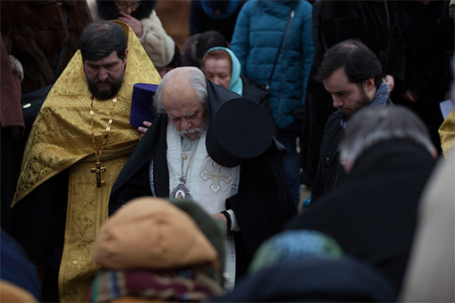
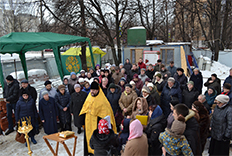

7 ФЕВ 2017
Освящение закладного камня
7 февраля 2016 года в 14.00 прихожане строящегося храма в честь преподобного Саввы Сторожевского встречали владыку Пантелеимона, епископа Орехово-Зуевского. Жители нашего района собрались на чин освящения закладного камня в фундамент будущего храма. Это поистине историческое событие для жителей нашего района и города в целом. Храм преподобного Саввы Сторожевского великого... подвижника и ученика преподобного Сергия Радонежского, станет единственным в нашей столице.
7 ФЕВ 2017
Освящение закладного камня
7 февраля 2016 года в 14.00 прихожане строящегося храма в честь преподобного Саввы Сторожевского встречали владыку Пантелеимона, епископа Орехово-Зуевского. Жители нашего района собрались на чин освящения закладного камня в фундамент будущего храма. Это поистине историческое событие для жителей нашего района и города в целом. Храм преподобного Саввы Сторожевского великого... подвижника и ученика преподобного Сергия Радонежского, станет единственным в нашей столице.

Молебен 19.02.2017
19 февраля в этом году совпадает с неделей о Страшном Суде...Молебен 12.02.2017
12 февраля в этом году совпадает с неделей о блудном сыне...Молебен 12.02.2017
12 февраля в этом году совпадает с неделей о блудном сыне...Молебен 12.02.2017
12 февраля в этом году совпадает с неделей о блудном сыне...Молебен 12.02.2017
12 февраля в этом году совпадает с неделей о блудном сыне...Молебен 12.02.2017
12 февраля в этом году совпадает с неделей о блудном сыне...Молебен 12.02.2017
12 февраля в этом году совпадает с неделей о блудном сыне...Молебен 12.02.2017
12 февраля в этом году совпадает с неделей о блудном сыне...
<
...
>